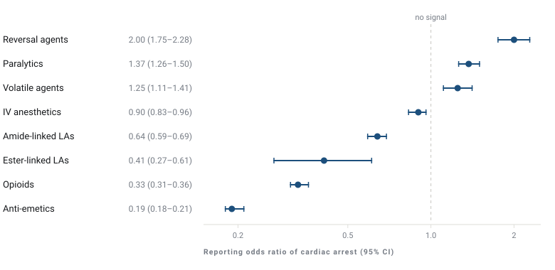
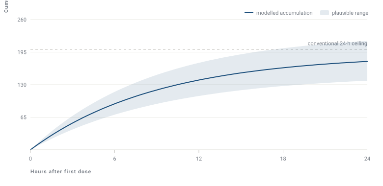
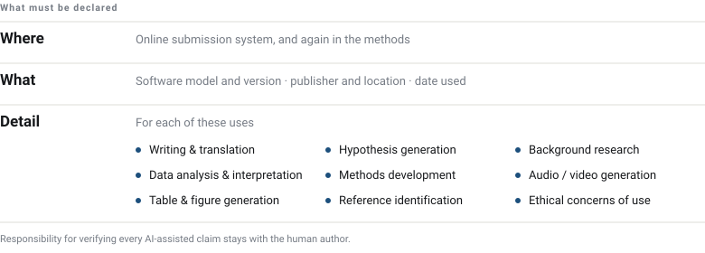
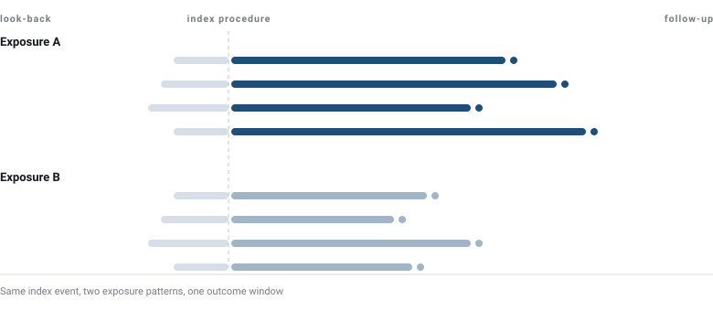
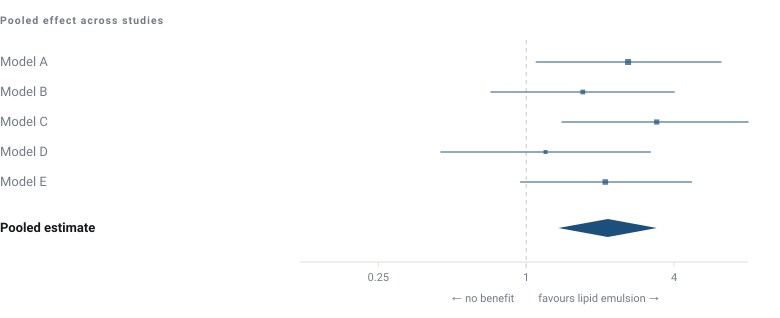

Anesthesiology · University of Illinois at Chicago
Michael R. Fettiplace,
MD, PhD
Identification, prevention and treatment of adverse events from local anesthetics.
I am a clinician scientist interested in safety and efficacy within anesthesia, with a specific focus on local anesthetics. I study the identification, prevention and treatment of adverse events from local anesthetics — from signal detection in national and global adverse-event databases, through the dosing limits that determine whether toxicity happens at all, to the evidence behind the antidote used when it does.
Clinically I practice regional, transplant and neuroanesthesiology. I chair the ASRA Pain Medicine LAST workgroup and co-authored the Third ASRA Practice Advisory on Local Anesthetic Systemic Toxicity.
Research
- 01 Pharmacovigilance Signal detection for local anesthetic harm in FAERS, VigiBase and the National Poison Data System
- 02 Toxicity & dosing Defensible dosing limits for blocks and catheters, and the ASRA practice advisories
- 03 Artificial intelligence Delphi consensus on disclosure and responsible use of language models in publishing
- 04 Retrospective cohorts Block timing, opioid consumption, echocardiography and anesthetic choice
- 05 Lipid emulsion efficacy Meta-analyses asking whether lipid emulsion therapy actually works, and how well
01 Pharmacovigilance
Finding the harm
Randomized trials are not powered to detect the rare catastrophes that define local anesthetic safety. Spontaneous reporting systems are — if you interrogate them carefully. I use disproportionality methods across the FDA Adverse Event Reporting System, the WHO VigiBase database and the National Poison Data System to ask which agents and which settings account for contemporary morbidity and mortality, whether the pattern of harm has shifted as practice moved toward high-volume fascial plane blocks, and how much of an apparent signal is an artefact of who chooses to file a report.
A recurring finding is that the dangerous exposures are not the ones regional anesthesiologists worry about most. Non-anesthesia settings, topical and infiltrative use, and lidocaine in particular account for a disproportionate share of deaths.

02 Toxicity & dosing
Preventing it
The familiar milligram-per-kilogram ceilings for bupivacaine and ropivacaine derive from single-injection techniques studied decades ago. Modern practice looks nothing like that: large-volume fascial plane blocks, bilateral truncal catheters running for days, and combinations layered on top of surgical infiltration. Applied to those techniques the old ceilings are simultaneously too permissive in some situations and needlessly restrictive in others.
This work reconstructs dosing guidance from what is known about absorption, accumulation and clearance — cataloguing published adult and pediatric truncal catheter practice, comparing the methods available for predicting safe redosing, and examining weight-based scaling in the blocks where it most often goes wrong. The output is meant to be usable at the bedside: a limit a clinician can defend, not an asterisked range. The same evidence base feeds the ASRA practice advisories.

03 Artificial intelligence
Disclosure standards
Large language models entered medical writing faster than the norms governing them. Authors, reviewers and editors are all now using them, often without a shared understanding of what must be declared. Blanket prohibitions are unenforceable; blanket permissiveness erodes accountability for what appears in the literature.
I have used modified Delphi methodology — first within the Regional Anesthesia & Pain Medicine community, then across the editors-in-chief of anaesthesia and pain medicine journals internationally — to converge on what should be disclosed, by whom, and in what form. The recommendations separate uses that require declaration from those that do not, and place responsibility for verification squarely with the human author.

04 Retrospective cohorts
Reading the record
A great deal of perioperative practice varies by habit rather than evidence, because the questions are too granular or too low-risk to justify a trial. Retrospective cohorts drawn from the anesthetic record can answer many of them, provided the exposure is defined sharply and the confounding is taken seriously.
This work spans block timing and early recovery, the characteristics that predict opioid consumption after arthroplasty, systemic toxicity following surgical infiltration, and the measurement decisions that change how disease severity gets classified. Running alongside is the methodological question of when an observational signal should change practice and when it should not — hip fracture anesthesia being the instructive case, where large observational datasets and randomized trials have pointed in different directions.

05 Lipid emulsion
Does the antidote work?
Intravenous lipid emulsion is the treatment of record for local anesthetic systemic toxicity and is used widely for other lipophilic drug overdoses. The question my recent work asks is narrower and harder than how it works: how well does it work, and how good is the evidence that it does?
The answer depends on what you pool. A 2026 systematic review and meta-analysis of lipid emulsion for non-local-anesthetic poisoning found the benefit far less certain than clinical enthusiasm implies. Earlier meta-analytic work established a survival benefit in animal models of local anesthetic toxicity, but a subsequent systematic review of that same literature documented substantial heterogeneity and risk of bias — small studies, inconsistent controls, and experimental models poorly matched to the clinical question. Efficacy claims are only as good as the experiments underneath them, and a large part of this work is holding that literature to a proper standard.

Resources
Guidelines & references
Primary sources for clinicians managing local anesthetic systemic toxicity and perioperative cardiac arrest.
- ASRA Pain Medicine practice advisories Guidelines and practice advisories, including the Third Practice Advisory on Local Anesthetic Systemic Toxicity
- ASRA LAST treatment checklist The 2020 checklist — the document to have printed and in the block cart
- AHA CPR & ECC guidelines American Heart Association guidelines for cardiopulmonary resuscitation and emergency cardiovascular care
- ASA PeRLS Perioperative Resuscitation and Life Support — the ASA's operating-room-specific alternative to ACLS
- lipidrescue.org Guy Weinberg's clearinghouse for lipid emulsion therapy — dosing, case registry and literature
Contact
Get in touch
Collaborations on pharmacovigilance, dosing and guideline work are welcome, as are residents and students looking for a research project.
Department
Anesthesiology
University of Illinois at Chicago
College of Medicine